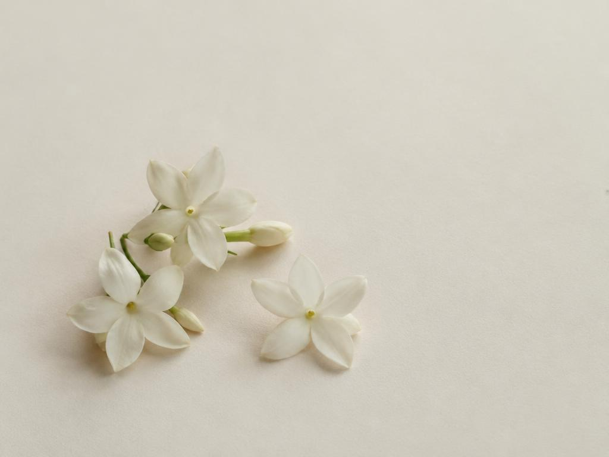

Ingredientes
El jazmín, la flor que perfuma de noche
Descubre una de las flores más presentes en la perfumería y las distintas sensaciones que puede aportar.

Una flor con muchas facetas
El jazmín es una nota floral que puede recordar a flores frescas, fruta o incluso a matices cálidos. Su carácter cambia según la variedad y la composición en la que aparece.
Del ingrediente al perfume
Los perfumistas combinan el jazmín con otras materias para crear acordes. Un acorde es la sensación que producen varias notas al mezclarse, igual que varios instrumentos construyen una melodía.
Cómo descubrirlo
Si quieres reconocer esta nota, prueba una fragancia floral sobre una tira de papel y vuelve a olerla después de unos minutos. Anota las impresiones sin preocuparte por acertar una descripción exacta.
Comentarios
Los comentarios se guardan únicamente en este navegador y no se comparten con otras personas.